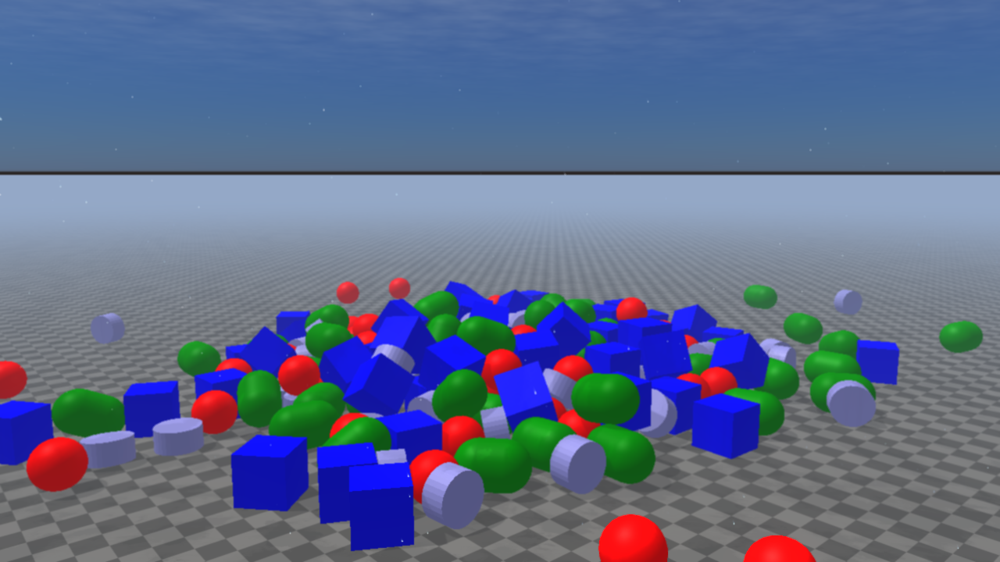
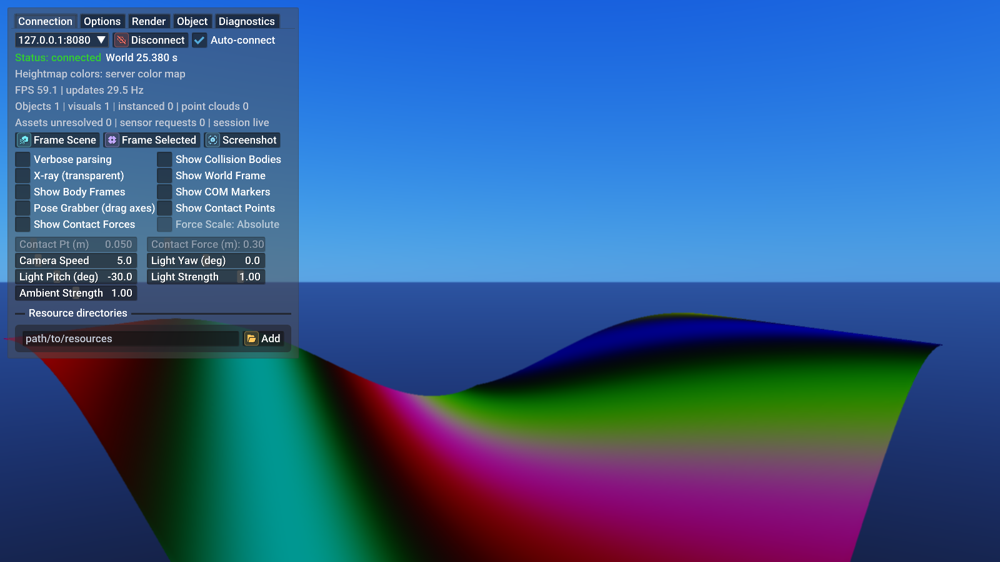
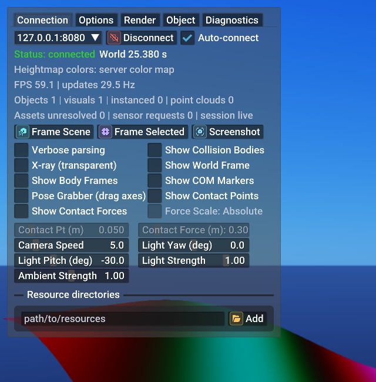
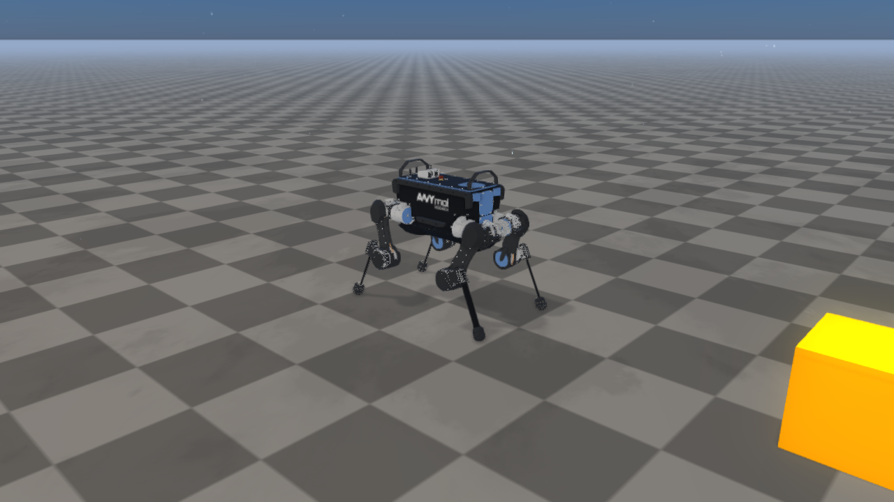

Rayrai TCP Viewer
The packaged rayrai_raisim_tcp_viewer binary is the recommended visualizer
for RaisimServer simulations. The examples project builds the same workflow
as the rayrai_tcp_viewer target. The viewer connects to a running server
over TCP, renders the world with the full rayrai pipeline (PBR + IBL +
post-process), and lets you interactively pause, step, force-poke, and
reposition objects without touching the simulation code.
This page covers the viewer application — its panels, controls, command-line
options — plus the underlying wire format for writing custom clients. For
applications that embed the renderer directly with
raisin::RayraiWindow, this binary is not used; see rayrai Visualizer
for the in-process path. For the server-side API the viewer talks to,
see Raisim Server.
{kind=link}

The viewer connected to the primitive_grid example. The same rayrai
PBR pipeline is used as the in-process RayraiWindow: procedural sky,
directional shadows, and the reflective checker ground used by the
Balanced, High, and Ultra presets.
Quick start
Start any
RaisimServerexample. The server listens on127.0.0.1:8080by default.Launch the viewer:
./rayrai/bin/rayrai_raisim_tcp_viewer
The viewer auto-connects to
localhost:8080. To point it at a different endpoint, pass--connect host:portor type into the host / port fields under the Control tab.
Run rayrai_raisim_tcp_viewer --help for the full option list. On Windows
use the .exe binary; the same TCP client and discovery paths are supported
on Windows, Linux, and macOS.
Server discovery
While running, RaisimServer sends a UDP discovery beacon once per second to
port 59312. With the default loopback bind, the beacon is sent to
127.0.0.1. After server.setBindLoopbackOnly(false), the beacon is
broadcast on the local network.
The viewer listens on the same UDP port, keeps compatible protocol-version
beacons in the Control tab endpoint dropdown, and removes stale entries
after roughly eight seconds without another beacon. Discovery only fills the
endpoint list; direct --connect host:port and manually typed endpoints
still work when UDP broadcast is blocked.
For cross-machine connections on Windows, allow both the TCP server port
(default 8080) and UDP discovery port 59312 through the firewall.
Command-line options
Option |
Effect |
|---|---|
|
Override the default |
|
Whether to dial the server on launch. Also controlled by env var
|
|
Skip the targeted shader prewarm pass. Startup is shorter, but the first content frame may pay shader compile cost. |
|
Also run the heavier renderer content-frame warmup at startup. This is intended for demos or drag/drop inspection where the first loaded model should appear immediately. |
|
Start with both side panels collapsed (full-screen scene). Also via
|
|
Disable auto-collapse of the left overlay. Useful for documentation screenshots and recorded demos. |
|
Automatically frame the scene after the first state update. |
|
Save a single PNG to |
|
Directory used by the F12 hotkey and PNG sequence recording. |
|
Record the raw TCP stream to a session file for later replay. |
|
Target TCP scene-update request rate. Values are clamped to the supported 15-120 Hz range; the default is 60 Hz. |
|
Replay a recorded session instead of opening a TCP connection. |
|
Playback rate multiplier (1.0 = real time). |
|
Loop the recorded session when replay reaches the end. |
|
Dump the parsed scene graph as JSON and exit. |
|
Log object poses to CSV while updates arrive. |
|
Load additional |
|
In batch runs, exit if the initial connection does not succeed within this wall-clock limit. |
|
Exit after the given wall-clock duration. |
UI layout
{kind=link}

The viewer’s left overlay opened on the Control tab while attached to
sim_control_demo. The right side of the window is the rayrai-rendered
scene; the overlay floats above it with translucent background so the
scene stays visible. The overlay auto-collapses to a small icon after
3.5 s without hover — pass --keep-overlay-open to disable that
behaviour for screenshots or demos.
The viewer overlay has two compact panels:
Left panel — tabbed UI: Control / Options / Render / Objects / Diagnostics. This is where every TCP-client setting lives.
Right panel — Selected object inspector. Appears when you click an object in the scene or in the Objects tab. Shows read-only pose, body type, mesh/resource metadata, estimated velocity, and per-joint angles for articulated systems. Editing controls live in the Control tab’s selected-control section.
Both panels are independently collapsible. Click the small chevron in the
header, or pass --minimize-panels to start with both panels minimized.
Control tab — widget reference
{kind=link}

Detail crop of the Control tab. Widget walkthrough below mirrors the layout top-to-bottom.
Connection row.
Host / port field — type
host:portdirectly, or pick a recent or discovered entry from the dropdown chevron. CompatibleRaisimServerbeacons include host, executable, bind mode, and connection status; newer incompatible protocol versions are filtered out. Persisted in$XDG_CONFIG_HOME/raisim/rayrai_tcp_viewer.json.Connect / Disconnect button — toggles the TCP socket. Greyed out while a session is replaying (
--replay-session).Auto-connect checkbox — when on, the viewer dials the server on launch and re-dials after a clean disconnect. Off means manual connect only, which is the right default for offline scene inspection.
Status block (read-only). Coloured text — green Connected, amber
Connecting…, red Disconnected: <reason> — followed by:
World <t> s— the server-sideworld.getWorldTime()snapshot from the most recent frame.Heightmap colors: server color map— confirms heightmap streaming is using the server-side colour table rather than a viewer override.FPS X | updates Y Hz— renderer FPS and incoming TCP update rate respectively. If FPS drops while updates stay high, the renderer is the bottleneck (lower the quality preset on the Render tab). If updates drop while FPS is fine, the server or network is the bottleneck.Objects N | visuals N | instanced N | point clouds N— current scene counts as parsed from the latest frame.instancedincludes ordinary streamed instanced visuals plus synthesized TCP mesh batches for repeated articulated meshes.Assets unresolved N | sensor requests N | session live|recording|replay—unresolvedis the number of mesh paths that could not be found; fix by passing--resource-dir PATH(or the Options tab field). The session marker reflects--record-session/--replay-session.
Camera helpers.
Frame Scene — fit every selectable object in the camera frustum. Same as the keyboard shortcut
F.Frame Selected — fit the currently-selected object only.
Screenshot — write a PNG to
--screenshot-dir(see the Options tab to change the directory).
Simulation row. Only enabled when the server has negotiated
PROTOCOL_FEATURE_SIM_CONTROL. The viewer greys the icons out
automatically against a legacy RaisimServer build; see
RemoteScene::serverSupportsSimControl() for the same flag from the client
side.
Pause / Resume (orange ⏸ when running, green ▶ when paused) — sends
CR_PAUSE/CR_RESUME. The server skipsworld_->integrate()but state streaming keeps running, so the camera, panels, and inspector stay responsive while time is frozen.Step — sends
CR_STEP_NwithstepCount = 1. Advances oneworld_->integrate()tick.Step 10 — same but
stepCount = 10. Hold the button to scrub.
Debug toggles. Two-column grid of boolean toggles:
Verbose parsing — logs every received TCP frame to stderr with field offsets. Use when chasing wire-format issues, then turn back off (heavy log volume).
Show Collision Bodies — draw the collision shapes the contact solver actually sees, instead of the visual meshes. Distinguishes “the visual mesh I authored is huge” from “the collision body is right”.
X-ray (transparent) — alpha-blend every opaque object so you can see through the scene. Useful for inspecting nested articulated systems or hidden constraints.
Show World Frame — draw the X/Y/Z triad at the world origin.
Show Body Frames — draw body-frame axes for selectable streamed bodies.
Show COM Markers — draw markers at streamed center-of-mass positions.
Pose Grabber (drag axes) — show a world-axis pose gizmo on the selected object. Drag its translation or rotation handles to queue pose edits.
Show Contact Points — render small spheres at every active contact point reported by
world.getContacts().Show Contact Forces — render arrows scaled by the contact impulse magnitude at every contact point. Pair with Contact Pt and Contact Force sliders below to scale them so they’re visible.
Force Scale: Absolute — interpret contact-force arrows in absolute units instead of normalizing them to the current frame’s largest force.
Light and camera sliders. Direct overrides of the renderer’s main
directional light and camera. In C++, the corresponding state is
viewer.getLight().direction, the light’s diffuse/specular color
terms, and RenderQualitySettings::mainLightAmbient:
Camera Speed — WASD movement multiplier.
Light Yaw / Light Pitch — direction of the main directional light, in degrees.
-30°pitch is the default afternoon sun angle.Light Strength — scalar multiplier on the directional light’s PBR intensity.
Ambient Strength — multiplier on the IBL ambient contribution (sky-driven fill). Lowering this darkens shaded sides without dimming the sun.
Contact Pt / Contact Force — size sliders for the contact debug spheres / arrows above.
Resource dirs. Text field + Add button. Each added directory is
inserted into the renderer’s mesh-search path, applied immediately to the
next frame’s asset resolution. Use this to fix Assets unresolved for
URDFs whose mesh paths assume a workspace root that isn’t on the default
search list. The same list can be passed up-front via --resource-dir
PATH (repeatable).
Options tab
The Options tab houses viewer-local preferences — they don’t go over the TCP socket, so they apply to every connection:
UI Scale — global ImGui font / control scale. Persists across runs.
Reset Scale — restore the auto-detected DPI-derived default.
Show collapsed logo — toggle the small raisim badge that appears in the panel header when minimized. Off for a more compact corner.
Hover the collapsed header to open the panel vs the legacy click-to-expand behaviour.
Frame Scene / Frame Selected / Reset Camera — camera framing shortcuts matching
F,C, andR.Orthographic views — snap to Top / Bottom / Front / Back / Left / Right orthographic projections of the current scene bounds, or return to Perspective.
Camera bookmarks — save and restore four named camera positions from the UI. The keyboard shortcuts use the same camera state.
Toggle Fullscreen — same as
F11.Screenshot directory — path used by F12 and the Screenshot button. Defaults to the current working directory unless
--screenshot-diroverrides it.PNG-sequence record every N frames — records a frame-numbered PNG sequence at the chosen stride. Output goes into the screenshot directory.
TCP session recording — start / stop raw TCP recording from the UI. Replay sessions also expose pause, single-step, restart, and speed controls.
Render tab
The Render tab is the rayrai pipeline configuration mirror — every knob documented in Render quality, tone mapping, color grading, Lighting, shadows, and HDR/IBL, Post-process effects, and Weather and atmospherics:
Quality preset — Fast / Balanced / High / Ultra. Picks one of the defaults documented in
RenderQualitySettings::defaultRenderQualitySettings.Custom overrides — once you tweak any subfield, the preset row reads
Custom; click Reset to preset to return to the canonical values.FXAA / TAA — antialiasing mode.
Bloom — enable/disable, with threshold and intensity sliders that match
RenderQualitySettings.bloomThreshold/bloomIntensity.SSAO — screen-space ambient occlusion strength + radius.
Depth of field — toggle + aperture / focus-distance / focus-range sliders.
Tone mapping — dropdown over
ViewerColorMode(FastLinear / ACES / UnrealPreview / Filmic / AgX).Color grade preset — dropdown over
ColorGradePreset.Procedural sky — toggle + sun-strength + cloud-quality dropdown.
Weather — dropdown over
WeatherPreset(Clear / Overcast / Rain / Storm / Snow) plus rain / fog / wetness sliders. The renderer applies these in addition to whatever the server may have authored — set the server-side weather to None if you want viewer-only authoring.Reflective ground + Planar reflection strength — match the
RenderQualitySettings.reflectiveGround*fields. On for High and Ultra by default.
Objects tab
The Objects tab lists every selectable object the server has sent so far, with:
Filter field — case-insensitive substring match on the object name.
Group by type — fold the list into per-type sections (single-body / articulated / heightmap / instanced visuals / point cloud).
Hide collision shapes for all — global toggle that propagates the per-object Show collision bodies state across every entry. Useful when you want a uniform x-ray view without ticking every object.
Per-row click — selects the object (same as clicking it in the scene).
Per-row eye icon — toggle visibility without removing the object.
Diagnostics tab
The Diagnostics tab is the field for debugging a connection rather than driving one:
Packet history — circular buffer of recent TCP frames with sizes, feature bits, and parse status.
Asset resolution log — every mesh / texture path the renderer asked for, with the directory it was found in or the error if not. Mirror of the
Assets unresolvedcount on the Control tab.Parse error log — last N parse-error messages from
raisin_tcp_window, including the byte offset where the parser gave up and the message size in flight. Pair with Verbose parsing to reproduce.Cache stats — shader binary cache hits / misses / stores for the current process. See Performance notes and the C++ API reference for the underlying
Shader::binaryCacheStats()API.Data transfer target — graph recent receive bandwidth and set the target TCP update request rate between 15 and 120 Hz. This is the runtime equivalent of
--update-rate.Security note — the viewer reminds you that TCP traffic is plain and unauthenticated; use loopback, SSH/VPN, or a trusted network.
Right-side inspector
The right-side panel only appears when an object is selected. Top-to-bottom:
Object name and stable id (
Object::Idfrom the world).Body type — Static / Kinematic / Dynamic.
Position / Orientation — current streamed pose in world coordinates.
Velocity — estimated linear speed and angular speed when enough samples are available.
Joint angles (articulated systems only) — read-only angle table from the selected articulated body. Use the Control tab’s generalized-coordinate editor when you want to send
CR_SET_GC.Mesh / resource metadata — mesh file and resolved resource directory when available.
Sim control workflow
{kind=link}

The viewer attached to the sim_control_demo example. Clicking
Pause in the Control tab sends a CR_PAUSE request to the server;
the next world_->integrate() is skipped while state streaming keeps
running. Step and Step 10 push one or ten single-tick advances.
The Pause / Step buttons send CR_PAUSE / CR_RESUME / CR_STEP_N
messages over the existing update channel. The server consumes them inside
integrateWorldThreadSafe(): paused means world_->integrate() is
skipped, but state streaming, sensor reads, and the scene mutex all keep
working — you can still pan the camera, screenshot, and inspect objects
while time is frozen.
Stepping while paused enqueues N single-step integrations that drain one
per tick. This means you can hold Step (or click Step 10) to advance the
simulation deterministically, frame by frame, with the camera tracking what
just happened.
For programmatic control without the UI, the same messages can be sent by
any client that speaks PROTOCOL_FEATURE_SIM_CONTROL — see
raisin::tcp_viewer::sendUpdateRequest and the SimControlRequest struct
in rayrai/RaisimTcpCommon.hpp.
Force / pose application
Shift + left-drag on the selected object sends CR_APPLY_FORCE for the
duration of the drag. The drag anchor is stored in the selected body’s local
frame, so the force application point follows the body as it moves. The
selected-control panel can also send explicit CR_APPLY_FORCE /
CR_APPLY_TORQUE requests.
Pose widgets and the pose grabber emit CR_SET_POSE for single bodies and
CR_SET_GC for articulated systems. Pose and generalized-coordinate edits
are applied under the world mutex as soon as the server drains client
requests. Force and torque requests are converted into active client forces
with a short hold window (0.12 s of simulation time) and are applied on each
subsequent integration tick until they are refreshed or expire. While the
server is paused, a queued force is refreshed but is not applied until a
step or resume tick actually integrates the world.
Access control
There is no authentication or capability handshake — if the TCP connection
is open, the client can issue any sim-control request the server supports.
The bind address is the only access control: RaisimServer binds to
127.0.0.1 by default. Call server.setBindLoopbackOnly(false) only on
trusted networks (see Raisim Server for details).
Screenshots and recording
F12 — capture a PNG to the configured screenshot directory.
F11 — toggle fullscreen desktop mode.
PNG sequence — enable the Options-tab checkbox and choose the frame stride to record numbered PNGs into the screenshot directory.
Camera bookmarks — save and restore four camera positions from the Options tab.
H / ? — show or hide the keyboard shortcut overlay.
M — cycle the measure tool through off, 2-point ruler, and 3-point angle measurement. Left-click places measurement points.
G — toggle the pose grabber for the selected object.
Session recording — see
--record-session/--replay-session. Recorded sessions store the raw TCP frames, so you can re-render a run later at any quality preset.
Articulated-system inspector mode
While the viewer is not connected to a server, you can drag a URDF (.urdf)
or MuJoCo XML (.xml/.mjcf) file from your file manager onto the viewer
window. The file content is sniffed for a <mujoco root marker; if present
the model is loaded through the MJCF path (World::loadMjcfFile), otherwise
it goes through the URDF path (World::addArticulatedSystem). MJCF loads
may bring in extras declared in the <worldbody> (ground plane, lights,
mocap bodies) — they’re tracked and removed together with the robot when you
close the inspector.
The viewer then opens a Joint Inspector panel:
Per-joint sliders for revolute and prismatic joints (bounded by the URDF’s
<limit lower="..." upper="...">when present, free-form otherwise).DragFloat3/DragFloat4widgets for spherical joints and floating bases.Reset pose sets all joint values to zero (identity quaternions).
Close inspector removes the local robot and returns the viewer to normal TCP-client mode (Connect / Auto-connect become re-enabled).
The inspector is kinematic-only — there is no integration, no contact
resolution, no physics. It’s intended for quickly inspecting URDF / MJCF
authoring (joint axes, limits, mesh paths) before plugging the model into a
running raisim::World. Drops are ignored while a server connection is
active so that the streamed scene and the local robot don’t fight over the
same renderer; disconnect first if you want to inspect a file.
Objects and selection
Click any object in the scene or in the Objects tab list to select it. The right-side inspector shows:
Object name, tag, body type
World-space position and orientation
For articulated systems: joint names and current joint angles
Toggleable collision-body visibility per-object
The Objects tab supports group-by-type, name filtering, and a collision-hide toggle that propagates to every selectable object at once.
Rendering settings
The Render tab exposes the rayrai pipeline controls covered in detail in Render quality, tone mapping, color grading, Lighting, shadows, and HDR/IBL, Post-process effects, and Weather and atmospherics: quality preset, FXAA, bloom, screen-space AO, depth of field, OIT, sky + weather, reflection-probe / planar-reflection toggles, and PBR material/tone-mapping options.
Diagnostics
The Diagnostics tab shows live packet history, asset resolution status (useful when meshes can’t be found), and per-frame parse-error logs. Useful when developing custom clients or chasing mesh-path issues.
Wire format
The Rayrai TCP viewer protocol is explicitly versioned. The current viewer sends a protocol header with feature bits before each request, and the server replies with the negotiated feature set. A viewer rejects newer unsupported protocol versions with a clear error instead of attempting to parse an incompatible stream.
Current feature bits cover the explicit header, deformable delta streaming, and sim control. Deformable objects send mesh topology during initialization or topology changes; ordinary update frames send vertex positions only. This keeps dynamic cloth/cube streaming cheaper while avoiding binary compression until network bandwidth is measured as a bottleneck.
The protocol constants live in rayrai/RaisimTcpCommon.hpp (namespace
raisin::tcp_viewer):
kDefaultPort— defaultRaisimServerport the viewer connects to.kProtocolVersion— the current wire version. Mismatched versions cause the viewer to disconnect with a versioned-protocol error.kProtocolFeatureExplicitHeader,kProtocolFeatureDeformableDelta, andkProtocolFeatureSimControl— the currently-negotiated feature bits;kProtocolSupportedFeaturesis the OR of all bits this build understands.kMaxMessageBytes— maximum accepted message size (default 64 MiB), overridable at build time via theRAISIM_TCP_VIEWER_MAX_MESSAGE_BYTESpreprocessor define when very large scenes need a larger frame budget.
The wire format is a native-endian binary stream. Each TCP frame begins with
an int32_t total-frame-size header (including the 4-byte header itself).
Scene strings use int32_t lengths; sensor-response names use uint64_t
lengths to remain ABI-compatible with the legacy RaisimServer protocol.
Headless screenshot recipe
The same binary runs without a window manager when invoked with
--screenshot. The viewer connects, waits for the first valid scene
update, captures one PNG, and exits — useful for CI smoke tests, doc
builds, and dataset preview generation:
source ./raisim_env.sh
# 1) Start any RaisimServer example in the background.
./build-examples/examples/primitive_grid &
# 2) Capture a 1280x720 PNG framed on the scene, then exit.
./rayrai/bin/rayrai_raisim_tcp_viewer \\
--connect 127.0.0.1:8080 \\
--camera-lookat 14,-14,6,-1,-1,3 \\
--screenshot out.png \\
--window-size 1280x720 \\
--wait-for-server 8 \\
--exit-after 5
The two screenshots on this page were generated exactly this way. Combine
--minimize-panels for clean shots, or omit it to capture the overlay
panels.
Embedding the server in your application
Wire the server up on the simulation side with three lines and a tick callback that runs under the world mutex:
#include "raisim/RaisimServer.hpp"
#include "raisim/World.hpp"
int main() {
raisim::World world;
world.setTimeStep(0.005);
world.addGround();
auto* ball = world.addSphere(0.1, 1.0);
ball->setPosition(0, 0, 1.0);
raisim::RaisimServer server(&world);
// Default bind is 127.0.0.1. Only open the bind on trusted networks.
// server.setBindLoopbackOnly(false);
server.launchServer(8080);
// Optional: drive your own work inside the locked region, after
// client requests are drained and before world.integrate() when
// this tick is allowed to step.
for (size_t i = 0;; ++i) {
server.integrateWorldThreadSafe([&] {
if (i % 600 == 0) ball->setLinearVelocity({0, 0, 4.0});
});
}
}
The callback overload preserves the full pause / step / force / pose
behaviour of the no-arg version, so the viewer can still pause time even
while the example mutates the world every tick. See examples/src/server/
for a runnable showcase (sim_control_demo exercises the sim-control
surface end-to-end).
Writing a custom client
The header rayrai/RaisimTcpCommon.hpp exposes everything a custom client
needs: the TcpClient socket helper, BufferReader for parsing, the
ClientRequestType enum (CR_PAUSE / CR_RESUME / CR_STEP_N / CR_APPLY_FORCE
/ CR_APPLY_TORQUE / CR_SET_POSE / CR_SET_GC), and sendUpdateRequest for
batching sim-control requests onto an ordinary update.
A minimal frame-pulling loop:
#include "rayrai/RaisimTcpCommon.hpp"
using namespace raisin::tcp_viewer;
TcpClient client;
if (!client.connectTo("127.0.0.1", 8080, /*verbose=*/true)) {
std::fprintf(stderr, "connect failed: %s\\n", client.lastError().c_str());
return 1;
}
std::vector<char> payload;
while (client.isConnected()) {
// Ask for one fresh state frame. objectId=0 means "all objects".
if (!sendUpdateRequest(client, /*objectId=*/0, /*controlRequests=*/{})) break;
if (!client.recvMessage(payload)) {
if (client.lastIoWouldBlock()) continue;
break;
}
BufferReader reader(payload);
// First two values in every server frame are the negotiated
// protocol version and feature bits — see kProtocolFeature*.
const auto protocolVersion = reader.read<int32_t>();
const auto featureBits = reader.read<uint64_t>();
// …decode the rest using BufferReader::read<T>() / readString() /
// readVector<T>() until reader.ok flips false.
}
Each read advances reader.offset() and sets reader.ok = false if
there is not enough data left, so callers can decode an entire frame and
check ok at the end rather than after every field. Mismatched protocol
versions or unsupported feature bits are reported via reader.ok plus
the bytes at offset 0; the server will not send a payload it knows the
client cannot parse.
Driving the simulation from a custom client
Pause / step / force / pose are batched onto the same update frame the
viewer normally pulls. Each SimControlRequest is a tagged union — only
the fields relevant to type are read by the encoder:
using R = raisin::tcp_viewer::SimControlRequest;
std::vector<R> requests;
// Pause the integrator on the server.
requests.push_back({.type = ClientRequestType::CR_PAUSE});
// Advance 10 ticks while paused.
requests.push_back({.type = ClientRequestType::CR_STEP_N, .stepCount = 10});
// Push a 30 N force on object with visual tag 42, at the body's COM.
R force;
force.type = ClientRequestType::CR_APPLY_FORCE;
force.visTag = 42;
force.localBodyIdx = 0;
force.vec3a = glm::vec3(0.0f); // application point (world)
force.vec3b = glm::vec3(0, 0, 30.0f); // force vector (world)
requests.push_back(force);
// Teleport a single-body object to a new pose.
R pose;
pose.type = ClientRequestType::CR_SET_POSE;
pose.visTag = 42;
pose.vec3a = glm::vec3(1.0f, 0.5f, 0.8f); // position
pose.quat = glm::vec4(1.0f, 0.0f, 0.0f, 0.0f); // (w, x, y, z)
requests.push_back(pose);
// Set an articulated system's generalized coordinate.
R gc;
gc.type = ClientRequestType::CR_SET_GC;
gc.visTag = 99;
gc.gc = {0, 0, 0.54f, /*quat*/1, 0, 0, 0,
0.03f, 0.4f, -0.8f, -0.03f, 0.4f, -0.8f,
0.03f, -0.4f, 0.8f, -0.03f, -0.4f, 0.8f};
requests.push_back(gc);
sendUpdateRequest(client, /*objectId=*/0, requests);
// The server drains requests inside integrateWorldThreadSafe().
// Pose/GC edits apply under the mutex; forces are held briefly and
// applied on integration ticks until refreshed or expired.
The same enum and SimControlRequest struct are what the viewer’s UI
populates internally, so a custom Python or C# client built on top of
BufferReader and these request structs has feature parity with the
shipped viewer’s Pause / Step / force / pose surface.
Feature negotiation
After connecting, the first server frame carries the negotiated feature
bits. A custom client should AND those bits with kProtocolFeatureSimControl
once at startup, and grey out sim-control surfaces if the bit is not set —
exactly what the TCP viewer does internally via
RemoteScene::serverSupportsSimControl().
See also
rayrai Visualizer — in-process rayrai renderer and visualization APIs.
Raisim Server — server-side API including the sim-control surface.
Capture, diagnostics, and headless rendering — programmatic screenshot / capture APIs from in-process rayrai.
Example targets — rayrai example matrix.
API
-
struct BufferReader
Lightweight reader for binary message buffers.
The reader maintains a cursor into a byte buffer and provides helpers for reading typed values, strings, and vectors.
Public Functions
-
inline explicit BufferReader(const std::vector<char> &data)
Construct a reader over an existing byte buffer.
- Parameters:
data – Message payload.
-
inline size_t offset() const
Current offset from the start of the buffer.
- Returns:
Offset in bytes.
-
inline size_t size() const
Total size of the buffer.
- Returns:
Size in bytes.
-
inline size_t remaining() const
Remaining unread bytes.
- Returns:
Remaining byte count.
-
inline bool canReadBytes(size_t count) const
Check if a byte range can be consumed from the current cursor.
- Parameters:
count – Byte count.
- Returns:
True if the range is fully inside the unread payload.
-
template<typename T>
inline T read() Read a trivially copyable value from the buffer.
- Template Parameters:
T – Value type.
- Returns:
Parsed value or default-constructed value on failure.
-
template<typename T>
inline bool peek(size_t offset, T &out) const Peek a value at a byte offset without advancing the cursor.
- Template Parameters:
T – Value type.
- Parameters:
offset – Byte offset from current cursor.
out – Output value.
- Returns:
True if the value could be read.
-
inline bool readBool()
Read a boolean value.
- Returns:
Boolean value (false on failure).
-
inline std::string readString()
Read a length-prefixed string.
- Returns:
Parsed string (empty on failure).
-
inline glm::vec3 readVec3f()
Read a vec3 of floats.
- Returns:
Vector value.
-
inline glm::vec4 readVec4f()
Read a vec4 of floats.
- Returns:
Vector value.
-
inline glm::vec4 readQuatWxyz()
Read a quaternion encoded as wxyz floats.
- Returns:
Quaternion vector (wxyz).
-
inline std::vector<float> readFloatVector()
Read a vector of floats with a 32-bit length prefix.
- Returns:
Parsed float vector.
-
inline std::vector<int32_t> readIntVector()
Read a vector of int32 with a 32-bit length prefix.
- Returns:
Parsed int vector.
-
inline std::vector<uint8_t> readByteVector()
Read a vector of bytes with a 32-bit length prefix.
- Returns:
Parsed byte vector.
-
inline void skipBytes(size_t count)
Skip a number of bytes.
- Parameters:
count – Number of bytes to skip.
-
inline std::vector<raisim::ColorRGB> readColorMap()
Read a color map (length-prefixed array of raisim::ColorRGB).
- Returns:
Parsed color map.
-
inline void skipColorMap()
Skip a color map payload (length-prefixed).
-
inline explicit BufferReader(const std::vector<char> &data)